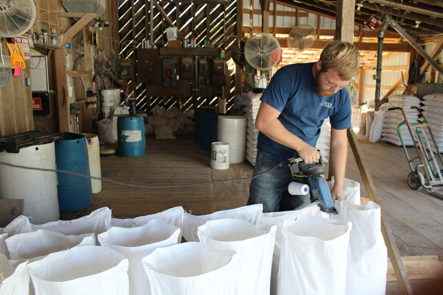

Welcome to Barrier Mills!
We are a locally owned and operated feed mill located in Mount Pleasant North Carolina. We sell various grains and feed for livestock. All of our grain and feed is NON-GMO, grown by ourselves, and made right here.
Hours of operations: Monday-Saturday, 8am - 12am / 1pm - 6pm